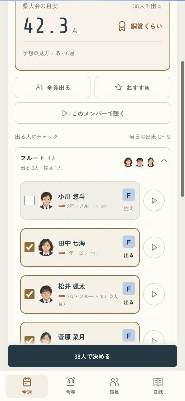
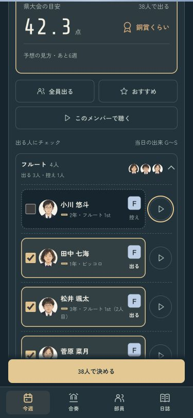
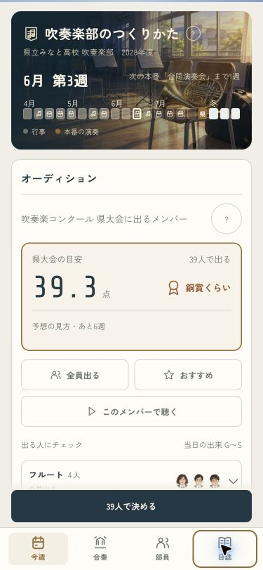
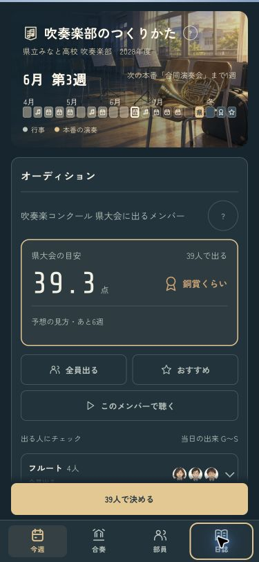
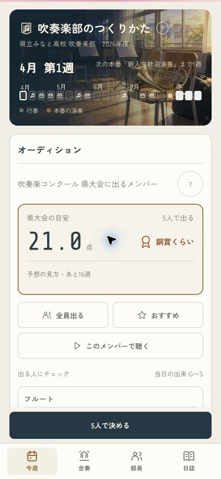
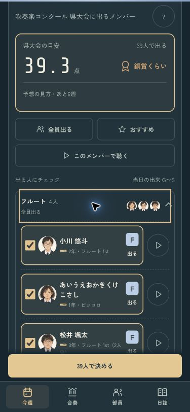

人選を、顔と音で決める
顔・楽器・当日の出来を見比べて、出る人と控えを選ぶ画面へ。本人の音もその場で聴けます。個人の出来はG〜S、予想点は部全体の目安として見せます。
確認用の画面です。いつものセーブは書き換えません。
本人を見て選ぶ · 375px
出る人は金の線とチェック、控えは点線と「控え」の文字。開いたパートや選んでいる位置を保ちながら、出場人数と予想点を見比べられます。
ライト
ダーク
部全体の目安を先に · 375px
予想点と賞を大きく表示。くわしい見方は開いて読めます。「全員出る」「おすすめ」で選び直しても、パートを閉じません。決定ボタンは下のタブのすぐ上に置きました。
ライト
ダーク
少人数でも、長い名前でも
5人ならそのまま全員を表示。12文字の名前は切らずに折り返します。誰も選んでいないときは、決定とメンバーの試聴を止めます。
5人の人選
12文字の名前